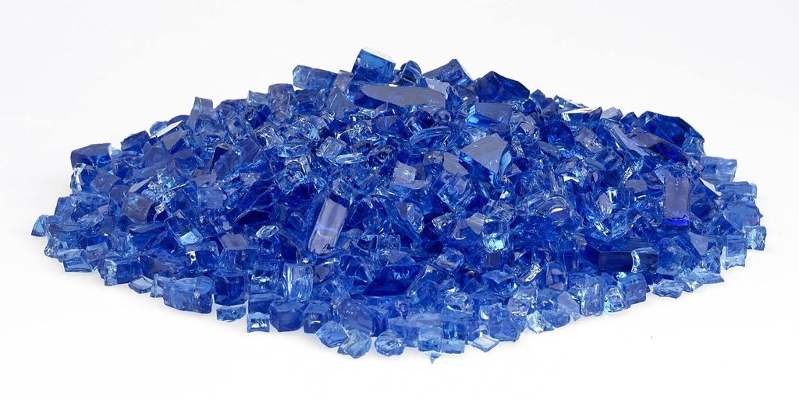
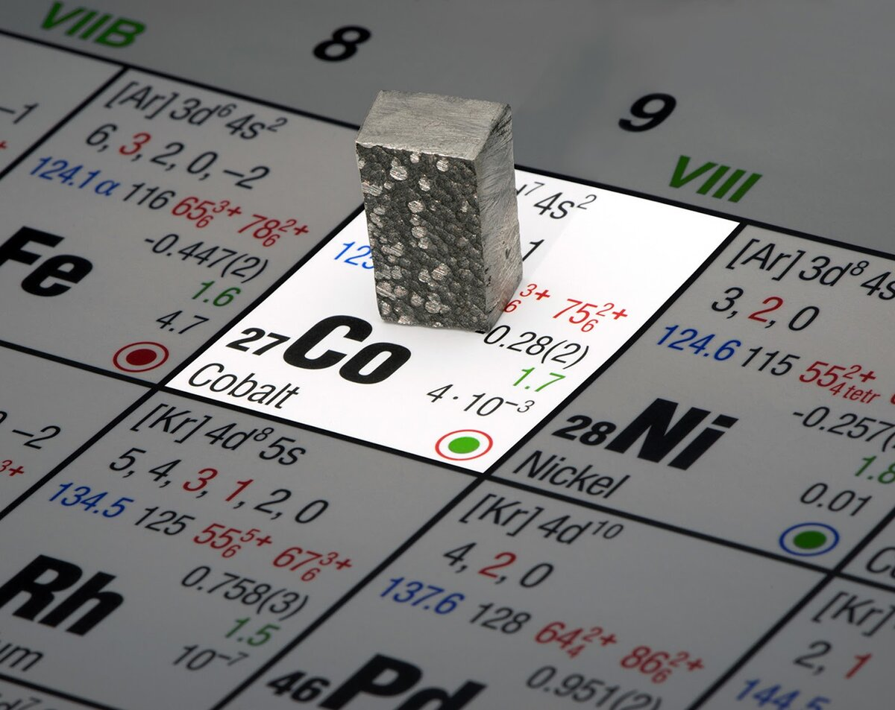

Кобальт
Ко́бальт (химический символ — Co, от лат. Cobaltum) — химический элемент 9-й группы (по устаревшей классификации — побочной подгруппы восьмой группы, VIIIB), четвёртого периода периодической системы химических элементов Д. И. Менделеева, с атомным номером 27.Простое вещество кобальт — это серебристо-белый, слегка желтоватый переходный металл с розоватым или синеватым отливом. Существует в двух кристаллических модификациях: α-Co с гексагональной плотноупакованной решёткой, β-Co с кубической гранецентрированной решёткой, температура перехода α ↔ β 427 °C.

Оксид СоО применяли в Древнем Египте, Вавилоне, Китае для окрашивания смальты, стёкол, эмалей в синий цвет. В Западной Европе начиная с 16 в. для этого использовали цафру (или сафлор), получаемую обжигом руды «кобольд» (от нем. Kobold – домовой, гном; название было связано с трудностью переработки руды). В 1735 г. Г. Брандт, нагревая смесь цафры с углём и флюсом, выделил металл, который назвал «корольком кобольда». В конце 18 в. это название было изменено на «кобальт».

Кобальтсодержащее сырьё подвергают пиро- и гидрометаллургической (с использованием H2SO4 или растворов NH3) переработке. От сопутствующих элементов кобальт отделяют путём фракционного окисления и гидролитического осаждения (удаление Fe, Mn, As), цементации (удаление Cu и Ag), а также экстракции. Для разделения кобальта и никеля кобальт осаждают действием NaClO или Cl2. Металлический кобальт получают восстановительной плавкой Co3O4, образующегося при прокаливании Со (ОН)3; электролизом растворов солей (CoSO4, CoCl2), восстановлением водородом из аммиачных растворов. Объём мирового производства около 132 тыс. т/год (2019).До 65 % получаемого кобальта используют как компонент различных сплавов – магнитомягких, магнитотвёрдых, высокопрочных, жаростойких, твёрдых, с заданным термическим коэффициентом расширения и др. Соединения кобальта – катализаторы, пигменты, компоненты стёкол и керамики, микроудобрения. Радиоактивный 60Co (период полураспада T1/2 5,27 года) – источник γ-излучения – применяют в дефектоскопах, в радиотерапии злокачественных опухолей.